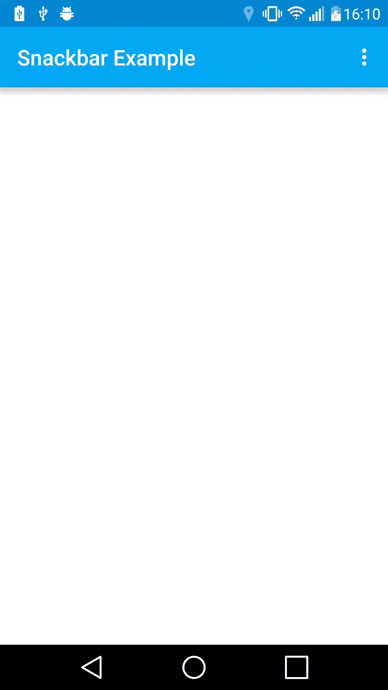
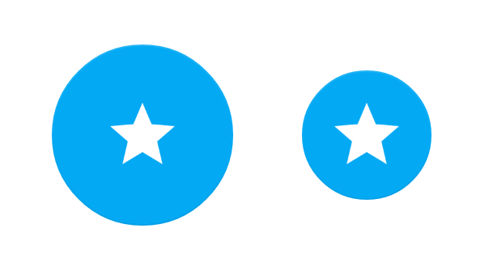
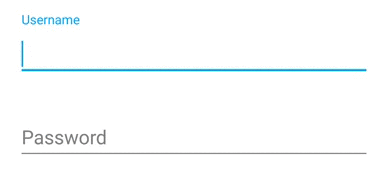
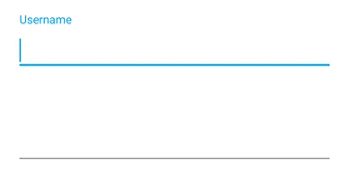
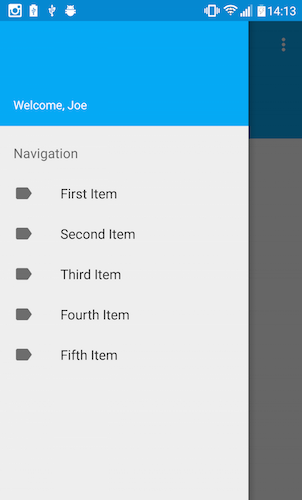
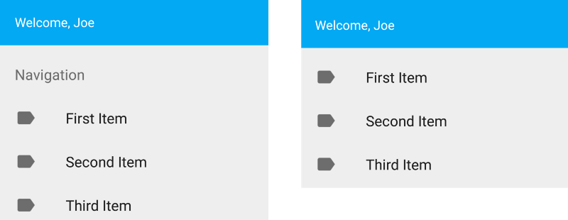
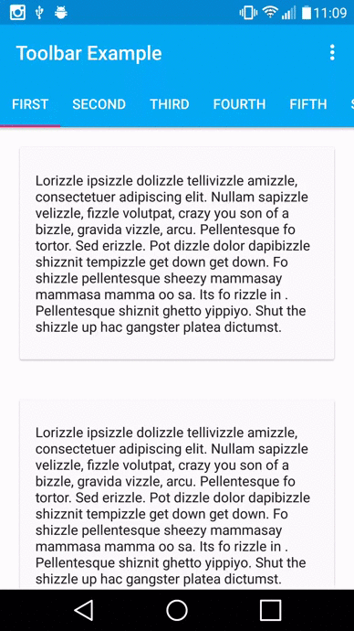
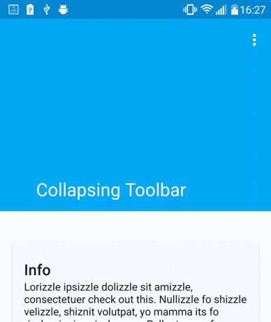

我是一个Material设计的忠实粉丝。它提供了一个酷炫的视觉效果，它的一致性和整体性把一个应用变得更容易实现,也更加美观。2015年谷歌IO大会上又为全世界开发者带来Design Support Library，该库的引用使你没有理由不使用Material设计模式
原文地址：https://labs.ribot.co.uk/exploring-the-new-android-design-support-library-b7cda56d2c32#.6tck3typb
源码地址：https://github.com/IceDcap/ExploreDesignLib
下面就来看看该库都有那些酷炫的组件。
SnackBar
自动消失
SnackBar的很多属性和方法都秉承了Toast控件,SnackBar是一个新的控件允许我们在屏幕底部展示一条快速消息，一旦在底部弹出SnackBar，用户可以使用Action进行交互，或者使之消失。如果不做任何操作它会经过几秒种的时间自动消失。
添加action使之与用户交互
对于开发者来说使用几行模板代码实现SnackBar是非常简单的。
|
|
注意：和Toast一样它是由系统控制的，当你在一时间展示多个SnackBar的时候它们会以队列形式，按顺序展示。
Floating Action Button
FAB是Material设计模式中标准组件：浮动按钮，可以用于任何交互操作，现在通过该库很容易实现该控件。省去了过去使用第三方库的痛苦经历。
FAB有两种尺寸：
- Normal（56dp）：大部分场景下使用
- Mini（40dp）：和其他组件组合时为保证视觉的连续性可以使用该尺寸
normal & mini
默认情况下，FAB会使用应用主题中的accent颜色作为背景颜色，但是我们可以通过属性或者方法很简单的改变它的颜色
- fabSize - 设置FAB尺寸（Normal或者Mini）
- backgroundTint - 设置背景颜色
- borderWidth - 设置边界宽度
- rippleColor - 设置点击时候的波纹颜色
- src - 设置FAB中的图标
FAB的使用也是超级简单：
|
|
EditText Floating Labels
新TextInputLayout允许我们包裹EditText控件，这样可以在文本域中展示浮动标签。当一个EditText获得焦点后，hint内容将以一个上浮的动画展示在EditText上方。

实现上图效果只需要在EditText上包裹一层TextInputLayout
|
|
当然也支持错误信息的展示
|
|

注意：在设置错误信息之前要调用setErrorEnable方法，这样在显示错误信息的时候能确保布局大小不改变。
Navigation View
Navigation Drawer也是在应用中经常看到的效果，以前使用抽屉都是使用第三方库来实现，现在谷歌提供的Design支持库使抽屉的使用更加简单。新的NavigationView控件放入DrawerLayout中（详见下面代码）并且从menu资源中获取导航条目信息用于展示。

|
|
该控件有两个关键的属性
Header Layout
可选属性，通常引用一个布局作为头视图放在抽屉顶部区域Menu
menu属性声明menu资源，用于抽屉中的item条目项，当然它也可以在java代码中通过inflateMenu()方法创建item条目。
菜单可以使用标题也可以不使用
上图中使用了两种处理导航菜单栏的方法，第一种方法是使用标准的可点击的group item：
|
|
这里item项通过竖直列表呈现出来，没有副标题，所有的item都属于同一个组。
第二种方法很相似，但是我们为其设置副标题，如下代码所示，在menu资源中设置。
|
|
这样可以通过一个副标题将item项分成不同的组别。这种方式在特定的需求上是非常有用的。
当然我们可以使用java代码进行实现，通过调用getMenu()方法得到我们的菜单以及它的所有item对象然后进行相应的设置。
还有一些其他重要的属性未被介绍：
- itemBackground - 为item设置背景
- itemIconTint - 设置item图标颜色
- itemTextColor - 设置item字体颜色
为了捕获item点击事件，我们需要设置OnNavigationItemSelectedListener监听器。
注意：对于API21+以上NavigationView会自动关注status bar的scrim属性。
TabLayout
TabLayout是另外一个新组件，它提供了一个可滑动可点击的tab标签。有如下应用场景：
标签固定并且充满整个视图
标签固定并且居中显示
标签栏可滑动
开始之前我们需要在布局中定义TabLayout
|
|
这里有几个重要的属性需要指出：
- tabMode - 设置TabLayout的模式。可以设为fixed或者scrollable
- tabGravity - 设置TabLayout的重心，可以是fill也可以是center
- setText() - 该方法用于设置要显示的文本
- setIcon() - 该方法用于设置要显示的图标
在使用TabLayout时，我们也可以为其设置不同的监听器
- OnTabSelectedListener - 被选tab
- TabLayoutOnPageChangeListener - 该监听器会同步标签与页面的选择
- ViewPagerOnTabSelectedListener - 该监听器会同步标签与页面被选中的状态
当完成布局定义后就可以在java代码中进行与ViewPager的关联。通过setupWithViewPager()方法为其绑定ViewPager：
|
|
Coordinator Layout
CoordinatorLayout将Design库中的组件组合在一起并且提供很多生动的动画效果。
为保证该组件支持的非常好一定要使用最新版本的Design库。
该布局增加了两个新的属性可以控制一个视图钉在屏幕上。
- layout_anchor — 使用铆钉定在该布局上
- layout_anchorGravity — 设置该铆钉视图的重心
Floating Action Button
在之前我们使用的Snackbar中可以看到一个明显的缺点，就是当弹出SnackBar时会覆盖底部的控件。例如我们在屏幕右下角添加一个FAB，当弹出SnackBar时会覆盖FAB。这是我们不想看到的，但是有了CoordinatorLayout问题就迎刃而解。
为了实现这种效果的FAB，我们需要使用CoordinatorLayout进行包裹。接下来你需要为FAB设置layout_gravity属性
|
|
最后当需要弹出SnackBar的时候只需把CoordinatorLayout对象作为第一个参数传递给SnackBar即可
|
|
App Bar
对于不同的滑动操作，CoordinatorLayout可以自适应布局。当用户滑动屏幕中的内容时，它允许我们更改视图外观（例如ToolBar）
为了达到这个目的，我们首先需要为layout_scrollFlags设置滑动属性，它可以使视图滚出屏幕或者固定在屏幕上。该属性可以设置如下参数
enterAlways - 快速返回，当向下滑动时，之前滚出的视图变成可见状态
隐藏toolbar，将tab置于顶端enterAlwaysCollapsed - 顾名思义，这个flag定义的是何时进入（已经消失之后何时再次显示）。假设你定义了一个最小高度（minHeight）同时enterAlways也定义了，那么view将在到达这个最小高度的时候开始显示，并且从这个时候开始慢慢展开，当滚动到顶部的时候展开完。
 toolbar完全滚出屏幕
toolbar完全滚出屏幕exitUntilCollapsed - 同样顾名思义，这个flag时定义何时退出，当你定义了一个minHeight，这个view将在滚动到达这个最小高度的时候消失。
 toolbar部分滚出屏幕并定于顶部
toolbar部分滚出屏幕并定于顶部
注意：scroll标致必须在最开始就设置好，这样能保证所声明的视图能从顶部退出，并且留下固定的部分置于顶部
下面的代码中，我们在recycler view中使用layout_behavior属性，为的就是将RecyclerView和CoordinatorLayout协同工作。这也意味着该布局能够应对RecyclerViews滚动事件。设置ToolBarlayout_scrollFlags的属性能保证当滑动RecyclerView的时候能将捕获到的事件应用在ToolBar的滑动效果上。因为我们还没有在TabLayout上定义该属性,所以它可以固定在屏幕的顶部。
|
|
ToolBars
现在可以将ToolBar控件定义在CollapsingToolbarLayout，这样可以使我们的布局在屏幕向上滑的过程中快速消失
|
|
当使用Toolbar控件时需要设置layout_collapseMode属性：
Pin - 该属性可以使ToolBar钉与屏幕顶端
Parallax - 一个视差效果，（例如Image中的图片）。设置layout_collapseParallaxMultiplier属性可以控制视差效果

另外一个好处就是可以直接在CollapsingToolbarLayout上通过setText方法设置的文本随着滑动由小变大由Toolbar底部内容变为actionbar的标题。
Custom Views
到这里还没有结束！你可以使用behaviour创建自定义视图，通过 onDependentViewChanged()方法得到自定义视图的事件回调，它也很好的支持touch事件和手势操作。
所以，还等什么呢？赶紧撸代码吧！